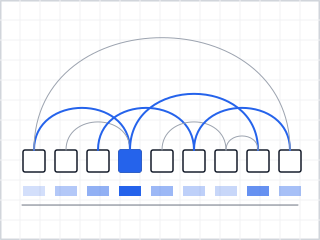
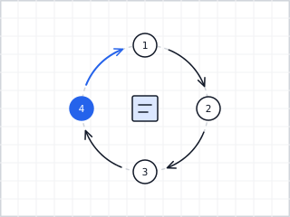
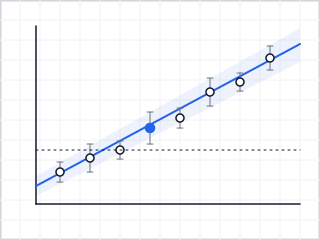

Digital Presence
Status: Live
SidEra Labs Website
The official public website of SidEra Labs, presenting its mission, areas of interest, projects and technical publications.
SidEra LabsIndependent engineering and research
SidEra Labs is an independent initiative that explores artificial intelligence, agent systems, software infrastructure, advanced computing and robotics. We care about how these things behave once they leave the demo, and we write down what we learn.
SidEra Labs is an independent engineering and research initiative. It is not a company with a product line and it does not claim to be a large research institution. It is a place to investigate useful technology properly: pick a question, build the smallest thing that can answer it, measure the result, and publish what was found.
The interests are broad on purpose. Modern intelligent systems are made of models, software, compute and, increasingly, hardware. Problems tend to hide at the joins between them, so that is where the work is aimed.
The areas below are interests, not departments. Where nothing has been published yet, the pages say so.
Every area has a page section that explains what the field investigates, why it matters, and what is still open.
How learned models behave inside real systems, and how to tell when they can be trusted.

The build, test and release machinery that decides whether good ideas survive contact with production.

Software that observes, decides and acts in loops, and the controls that keep those loops safe.

Where hardware shape, memory and precision decide what is practical to compute.

Software that has to meet sensors, motors, timing and physics.

Small, well-posed experiments that turn a hunch into evidence or a clear negative result.

A project is listed when there is a public repository or demonstration to inspect. Nothing here is padded.
Digital Presence
Status: Live
The official public website of SidEra Labs, presenting its mission, areas of interest, projects and technical publications.
The only project listed today is this website, which is digital presence and not a research result. Research and engineering projects will appear on the Projects page once they have a public repository, an honest status and stated limitations.
Work moves through the same five steps whether it is a model evaluation or a motor controller.
State what would change our mind, and what we would measure to find out.
Prefer a narrow, working slice over a broad plan.
A number means little without something simple to compare it to.
Record setup, results and failures so someone else can check.
Keep what held up. Say plainly when an idea did not.
Interfaces state units, types, limits and failure behaviour.
Results carry their conditions and their uncertainty.
Change one thing at a time so causes stay visible.
Where stakes are real, a person stays in charge of the decision.
Three engineering essays. They are general guidance with cited sources, not reports of SidEra Labs experiments.
What an AI agent loop has to do, step by step: observe, decide, act and verify, with practical notes on state, tool contracts, budgets and failure modes.
A practical checklist for experimental discipline in applied AI and engineering: baselines, honest data splits, repeated runs, ablations, slices and a ladder of claims.
Units, coordinate frames, timing, safe states and replayable logs: a practical checklist for the interface between software and physical systems.
Get in touch